词典
词典是一份按类别整理的词语和短语清单。LemmaLoom 会找出这些词条在你的文档中出现的每一处，统计每个类别的出现次数，还可以在阅读器中标注它们。凡是要找的内容能从措辞上辨认出来，例如模糊限制语或某个政策领域的词汇，都适合使用词典。
本章的示例围绕“气候辩论”项目的词典“模糊限制语”展开。你可以通过菜单命令文件 ▸ 导入 ▸ 示例项目把这个项目导入 LemmaLoom（见第 1 章“简介”中的示例项目）。“模糊限制语”有两个类别。“近似语”有七个词条，收有大约、左右、大致和或多或少等词。“缓和语”有九个词条，既有我觉得和要我说这样的短语，也有也许和大概这样的单个词。作者用这两类词在一定程度上弱化自己的陈述和说法，所以它们都属于模糊限制语。具体来说，近似语通过限定数字信息或描述性短语的精确程度来弱化它们，例如大约十二年。缓和语则让作者不必完全认定某个说法，以此弱化陈述。
关键术语
词典属于某一个项目。项目中的每个文档、文档集和查询都可以使用你的词典。词典由若干类别组成，每个类别包含若干词条。
类别有名称、颜色和一组词条。在阅读器中，类别中的每个词条都以这个类别的颜色显示；在任何图表中，类别的条形也使用这种颜色。
词条是一个词或一个短语，例如也许或我觉得。词条可以使用任何语言。LemmaLoom 按文本匹配词条，不考虑词义，只看词条字面上的内容（见本章后文的词条如何匹配和检查词条匹配的内容）。
本章有些功能需要索引，即导入后对每个文档进行的语法处理。索引期间，LemmaLoom 识别每个文档中的每个词和每个句子，对每个词做词形还原，得出它的词典原形，即词元（例如 seems 和 seemed 的词元是 seem），并确定它的词类（见第 21 章“分析与索引”）。
修改词典后，LemmaLoom 会重新查找这些词典中的所有词条。因此，词典的改动会立即反映在词典视图的计数结果和每个已启用的词典透镜中；使用这些词条的查询则在下次运行时反映这些改动。如果你把含有词典词条的查询存储为分析器，这个分析器会继续使用原来的词条（见本章后文的把词典查询存储为透镜或分析器）。要把当前的匹配项保留为编码实例，请使用自动编码（见本章后文的为匹配项编码）。
内置的元话语透镜依据自带的词表以及词元和词类标记，也会在文本中高亮显示模糊限制语（见第 6 章“透镜”中的元话语）。词典只保存你添加的词条，每个词条你都可以查看、移动和移除。
| 位置 | 可以用词典做什么 |
|---|---|
| 项目或文档集的词典视图 | 创建和编辑词典；查看每个类别和每个词条出现的次数 |
| 阅读器的透镜菜单 | 在打开的文档中标注词条 |
| 阅读器选区栏中的添加到词典 | 把选中的文字添加为词条 |
| 词汇速写视图 | 依次速写一个类别的各个词条 |
| 查询 | 查找匹配项，在规则中使用它们，列出词条及其命中次数 |
词典与编码
词典类别在外观上和编码有很多相似之处，它们同样有名称和颜色，也同样会在文档中突出显示特定的段落。不过，两者的产生方式和实际用法大不相同，这决定了哪一种更适合回答你的问题。
编码实例代表你对文档段落做质性分析时作出的解读。你认定一段话表达了怀疑，并加上名为“不确定性”的编码来标记它，就是把这种解读赋予了这段话；在你移除之前，它会一直保留。词典只依据词形识别段落，不考虑上下文和解读。无论这些词在各自的段落中是什么意思，LemmaLoom 都会在项目的所有文档中找出所定义词条的每一处出现，新添加的文档也包括在内。
一般来说，要识别带有特定词形的要素，例如模糊限制结构或政策名称，尤其是要在许多文档中统计它们时，词典更合适。在细读之前，词典也能让你迅速找到某种内容出现的位置。编码则适合一切取决于上下文的内容，例如没有任何标志性词语却表达了怀疑的段落，或者跨越好几个句子的论证。
许多研究会把词典和编码结合起来使用。例如，先根据词典词条的匹配自动为段落编码，再逐一查看匹配项，最后去掉误识别的部分（见本章后文的为匹配项编码）。查询也可以把词典规则和编码规则结合起来，例如查找标有“不确定性”编码且含有缓和语的段落（见本章后文的词典规则）。
管理词典
词典在词典视图中创建和编辑。项目和每个文档集都有这个视图。无论词典是不是在某个文档集的视图中创建的，这个视图都会列出项目中的全部词典。在文档集的视图中工作，只会影响这个视图统计哪些文档，以及词汇速写针对哪些文档生成。
打开词典视图：
- 对于项目，在导航栏中选择项目下的词典，这个视图会在单独的标签页中打开。
- 对于文档集，在导航栏中点按这个文档集，然后在文档集标签页顶部的一排按钮中选择词典。窗口较窄时，这一排按钮会变成一个菜单，这时请从菜单中选取词典。导航栏中的智能文档集和标签与普通文档集的操作方式完全相同。
下图显示的是项目词典视图中的“模糊限制语”。
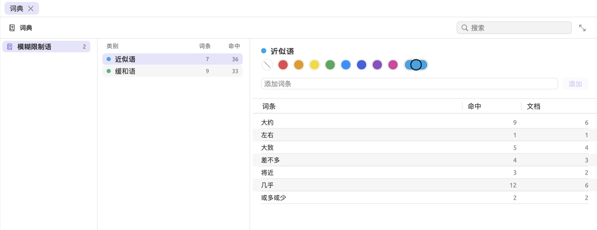
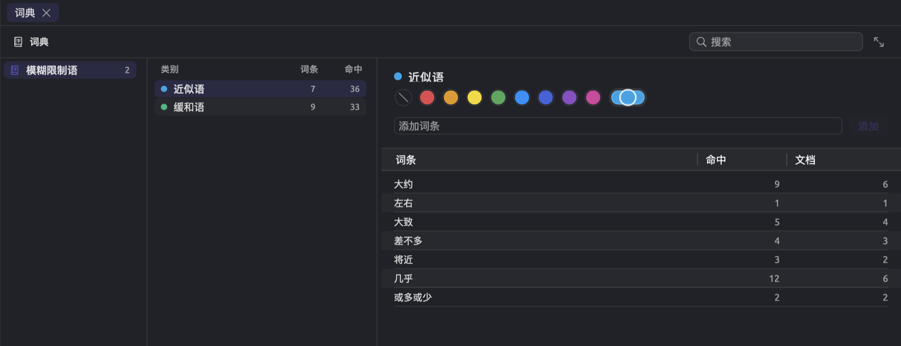
这个视图分为三栏。左栏按字母顺序列出项目的词典，每个词典旁边是它的类别数。中栏列出所选词典的类别，显示每个类别的颜色、名称、词条下的词条数和命中下的匹配数。右栏显示所选的类别，顶部是它的名称和颜色，下面是添加词条输入框和它的词条列表。拖移栏与栏之间的分隔线，可以给任何一栏更多空间；项目中没有词典时，这里显示无词典。
在项目的视图中，标题行包含标题、搜索框和在窗口中打开按钮，按钮图标是两个斜向箭头。这个按钮会在编码本窗口中打开这个视图，让你把它放在阅读器旁边。文档集视图的标题行只有搜索框。LemmaLoom 计算期间，标题行中会显示一个旋转的进度指示器。
在上方的搜索框中输入内容，可以筛选项目中所有词典的词条。没有匹配词条的词典和类别会隐藏起来。搜索期间，每个词典旁边会显示一个数字，表示其中有多少词条匹配；词条下的数字则表示每个类别中有多少词条匹配。如果所选词典中没有匹配的词条，LemmaLoom 会自动切换到第一个有匹配词条的词典。
对词典、类别和词条的改动都可以用编辑 ▸ 撤销（⌘Z）撤回。菜单项会写明所做的改动，例如撤销删除词典（见第 23 章“撤销与重做”）。
创建词典
一般来说，一个词典对应一个概念（例如模糊限制），类别则对应这个概念中你想区分的几种类型（例如近似语和缓和语）。这样，透镜会为这个概念显示一个图例，计数则在它的各个类别之间进行比较。
- 打开项目或某个文档集的词典视图。
- 点按词典列表下方的新建词典。列表中会添加并选中一个名为“新建词典”的词典，名称处于可编辑状态。
- 输入名称，然后按下 Return 键。
重命名和删除词典
要重命名词典，请在列表中右键点按这个词典，点按重命名，输入新名称，然后按下 Return 键。要取消重命名并保留原来的名称，请按下 Esc 键。
要删除词典，请右键点按它，然后选取删除词典。词典会立即删除。
词典被删除后，会从所有文档的透镜菜单中消失。在之前启用了它的地方，它的透镜也会停用。使用这个词典的查询会在结果区域显示缺失；在这些查询中另选一个词典后，它们会重新运行。
类别与词条
词条可以来自你自己的阅读、查询结果或已发表的词表；已发表的词表可以一步粘贴到一个类别中。
添加类别
点按类别列表下方的添加类别，LemmaLoom 会添加一个名为“新建类别”的类别，使用第一种尚未被占用的带名称的颜色，名称处于可编辑状态。为新类别输入名称，然后按下 Return 键。
你可以用颜色在阅读器中直观地区分各个类别。在中栏选择一个类别后，右栏会显示它的色块。点按名称下方的另一个色块即可更改颜色，也可以右键点按所选类别，从颜色中选取一种颜色。色块从无颜色开始，接着是八种带名称的颜色，最后是选择任意颜色（它会打开系统的颜色选取器）。
最好为每个类别设置各自不同的颜色。保留无颜色的类别在透镜中会以默认颜色显示，也就是蓝色色块的蓝色。
添加和移除词条
在“气候辩论”中，“缓和语”有九个词条。它们显示在右栏中，旁边是它们在整个项目中出现的次数。
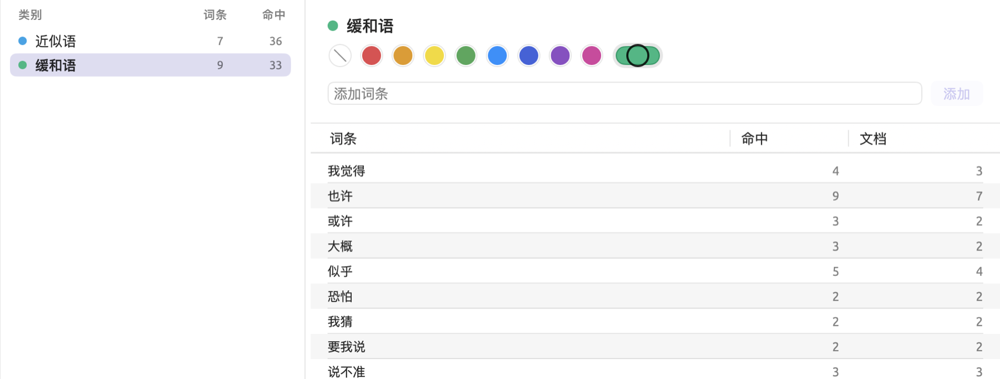
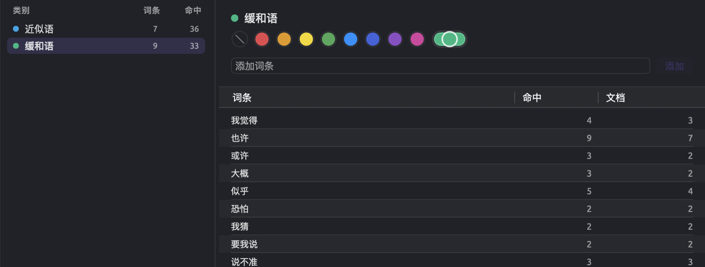
要向类别添加词条：
- 选择这个类别。
- 在添加词条中输入一个词条，或者粘贴一组词条，每行一个。
- 按下 Return 键或点按添加。
LemmaLoom 添加词条时遵循以下规则：
- 词条前后的空格会被去掉。
- 类别中已有的词条（不区分大小写）以及列表中重复出现的词条都会被略过。
- 添加词条后，整个列表会按字母顺序重新排列。
在这个输入框中，只有换行才会分隔词条。逗号会成为词条的一部分，所以粘贴用逗号隔开的列表之前，请先把每个词条放到单独的一行。
词条列表中的每个词条都带有命中和文档两列。从这里可以看到词条在项目或文档集中出现了多少次（命中），以及出现在多少个文档中（文档）。命中为零，说明你可能拼错了，或者这个词条从未在你的文档中出现；命中远高于其他词条的，值得进一步检查（见本章后文的检查词条匹配的内容）。
要移除词条，请选择它们并按下 Delete 键（⌫），或者右键点按它们，从快捷菜单中选取移除。
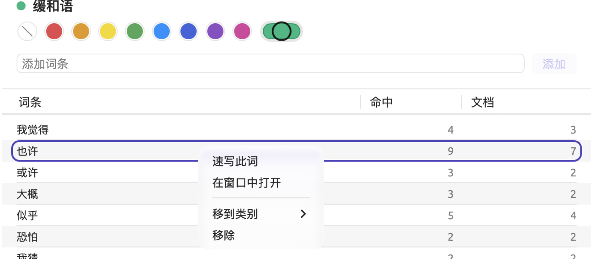
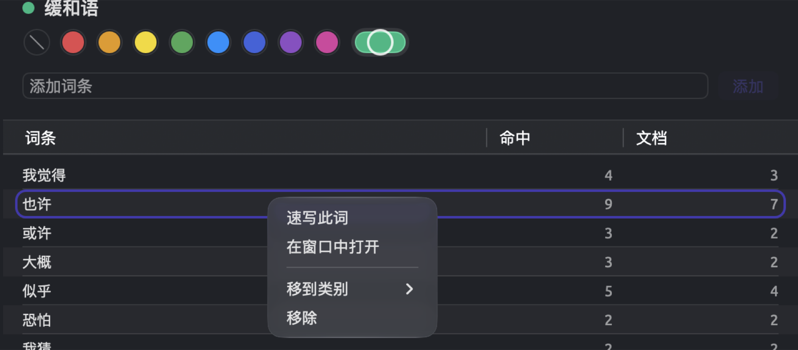
要在同一词典的各个类别之间移动词条，请把它们拖到中栏的另一个类别上；也可以使用快捷菜单中的移到类别，或者菜单栏中的编辑 ▸ 移到类别。如果目标类别中已有某个词条，只会保留一份。
编辑和删除类别
要重命名类别，请在右栏顶部修改名称并按下 Return 键，或者右键点按这个类别，从快捷菜单中选取重命名。同一菜单中的词汇速写会依次速写这个类别的各个词条，见下文的从类别开始的词汇速写。
选取删除类别会删除整个类别及其全部词条。
从文档中添加词条
在 LemmaLoom 中阅读时，你可以直接从文本中添加词和短语。
- 在阅读器中选中这个词或短语。
- 在阅读器底部附近的选区栏中，点按添加到词典。
- 选取词典，再选取类别。
新词条就是选中的文字，开头和末尾的空格会被去掉。
选择时只选词语本身。如果选区以逗号或句号开头或结尾，这个标点就会成为词条的一部分，只有文本中同一位置带有相同标点时才能匹配。
只有当前项目中有词典时，选区栏中才会出现添加到词典。如果所选词典没有类别，会出现一个空的子菜单。
从查询中添加词条
词表、搭配词列表或关键词列表可以一步把内容添加到一个类别中。搭配词是常出现在某个词周围的词，关键词则是一组文档比另一组文档用得更频繁的词（见第 16 章“查询结果与统计”中的搭配词和关键词）。查询必须查找词或文本匹配，它的显示必须是搭配词或关键词，或者是只有一个分组依据键的数量或比较。此外，查询必须只涵盖一个项目，因为词典属于一个项目。
例如，“气候辩论”项目中有一个为文档集“行动派”存储的关键词查询，名为“关键词：行动派”。这些关键词包括我们和今年等词，它们并不是模糊限制语，因此应当放进“模糊限制语”以外的另一个词典。
要把结果行添加到类别：
- 运行查询。
- 打开操作菜单（带圆圈的 ⋯），选取添加到词典。
- 选取词典，再选取类别。
LemmaLoom 按结果中显示的顺序添加每一行的标签，最多添加前 200 行。在按文档分组的列表中，标签是文档的标题；在词表中，标签就是词。对于关键词列表，只添加正关键词，即在这个文档集中出现得更频繁的关键词。如果列表按词元统计，添加的是词典形式（例如英文的 seem），透镜之后只会找到这一种形式；按词统计则会添加文本中实际出现的词形。
与类别中已有词条相同的行（不区分大小写）会被跳过。所有新词条在撤销历史中合为一步，所以一次撤销就能把它们全部删除。列表中通常会有不需要的条目，例如专有名称，所以添加后请检查一下这个类别。
词条如何匹配
词典透镜、词典视图中的计数、查询中词典词条的命中，以及使用词典透镜的自动编码，都以同样的方式查找词典词条。运行查询时，如果文本行的第一个菜单设为文本，查询也会以完全相同的方式查找词典词条。其中有两条规则可以在查询中更改，详见本章后文的查找词典匹配项。
匹配词条时不区分大小写、重音符号和字符宽度。词条 perhaps 能匹配 Perhaps 和 PERHAPS，naive 也能匹配 naïve。在德语中，schon 也能匹配 schön，因为变音符号被视为重音符号。如果要区分它们，请使用第一个菜单设为词形的查询，这个选项会区分重音符号。某些输入法（常见于中文输入法）输入的全角字母以及对应的全角数字，会被视为与普通字符相同，所以 CO2 能匹配 ＣＯ２。
所有词条都只匹配完整的词，也就是说，空格和标点符号（包括撇号、连字符、引号、句号、逗号、分号、冒号、感叹号和问号）都是匹配范围的边界。因此，carbon 能匹配 carbon-neutral 中的 carbon，about 能匹配 just about 中的 about。
短语词条中的各个词必须按原来的顺序出现，相邻的词之间要有正确的空格。因此，more or less 必须恰好是三个词，彼此之间各隔一个空格。
只能找到你输入的那个形式，所以每种形式都要作为单独的词条输入，例如把 seem、seems 和 seemed 分别添加到类别中。如果查询的第一个菜单设为词元，则只需输入词元（例如 seem），就能找到它的所有屈折形式（seems、seem、seemed）。
中文书写时词与词之间没有空格，因此含有汉字的词条在这些字出现的任何位置都能匹配。日文假名以及泰文、老挝文、高棉文、缅甸文和藏文书写的词条也以同样方式匹配。所以，可能在可能性和不可能中也能找到。对于较短的中文词条，请在透镜中核实可能的匹配；如果一个短词条找到的内容太多，就改用较长的词条。
在其他所有情况下，词条在中文文本中也遵循整词规则，汉字被视为字母。要匹配两边都紧挨着汉字的 CO2 或 2050 这样的词条，例如“到2050年”中的 2050，需要把相邻的汉字一并写进词条，或者在查询中取消勾选全词匹配。
每个词条都单独计数。假如“近似语”同时收有几乎和几乎全部，那么文档中每出现一次几乎全部，两个词条的计数就各加一。出现在两个类别中的词条，在两个类别中都会计数。只在重音符号上有区别的词条，例如 cafe 和 café，会产生重复的匹配；保留其中一个，移除另一个即可。
检查词条匹配的内容
在“模糊限制语”中，也许在“也许其中有些是真的”（“不必恐慌”）中起缓和语的作用，在同一篇的“也许可以把那个钟留在家里”中却没有这种作用，它在那里只是让一个建议显得客气。此外，大概在“最后，我大概是这样跟女儿说的”（同样出自“不必恐慌”）中也没有这种作用，它表示的是转述不够精确。不过，“缓和语”的计数把这三处都算了进去。
用词典统计某样内容时，请先在几个文档中启用它的透镜，读一读这些匹配项（见下文的词典透镜）。查看词条列表中的命中列，就能知道哪些词条占了类别计数的大部分；请先检查这些词条。如果你发现某个词条主要用于别的意思，就删除它，或者改用只在所需语境中出现的较长短语。查询还可以更精确，例如只查找数字前面的大约（见第 17 章“查询模式与发现”）。
词典透镜
项目中的每个词典同时也是一个透镜，可以在文档文本上添加标注（见第 6 章“透镜”）。透镜会在句子中高亮显示每一处匹配。
下图是启用了这个透镜的“不必恐慌”，它是文档集“怀疑派”中“模糊限制语”匹配项最多的文档。
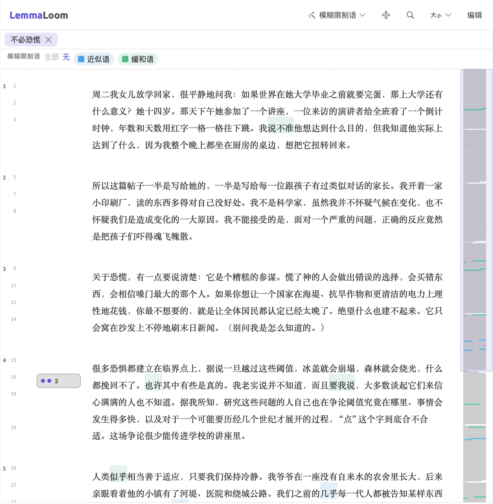
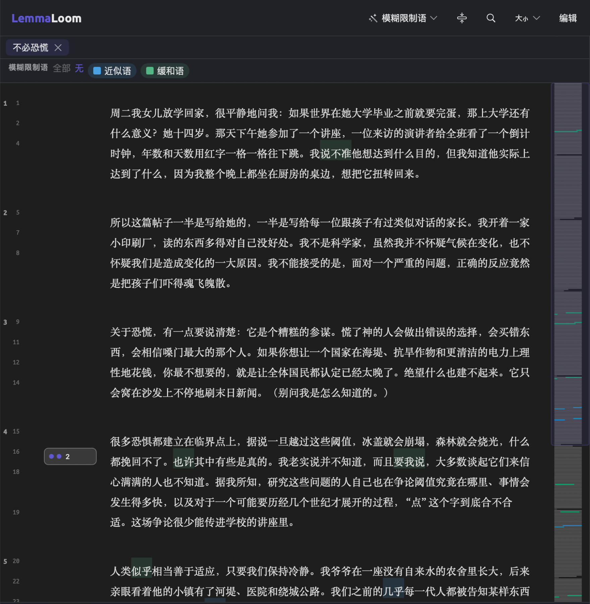
要启用词典透镜：
- 打开一个文档。
- 点按阅读器标题栏中的透镜菜单。
- 选取词典。词典按字母顺序列在书签和编码之后。
LemmaLoom 在文档中搜索完词典词条的匹配后，每个匹配项都会以所属类别的颜色高亮显示。文本上方的图例显示词典的名称，后面是每个类别对应的图例项，用法如下：
- 点按一个图例项，会停用或启用这个类别的标注。
- 点按无会停用所有类别的标注，点按全部则重新启用它们。
- 右键点按一个图例项，可以选取仅启用此项、停用（或启用）和全部启用。
要只显示含有匹配项的句子，请点按透镜菜单旁边的按钮，它的提示为仅显示透镜标注的句子；再点按一次即可显示整个文档。
要停用这个透镜，请在透镜菜单中再次选取这个词典。清除标注会停用这个透镜以及书签、编码和查询透镜，全部清除则停用所有透镜。全屏阅读器的透镜菜单中也有同样的选项。
文档的索引完成之前，透镜菜单不可用，提示为索引完成后即可使用透镜。LemmaLoom 为英语、德语和中文文档建立索引，因此在其他语言（例如法语）的文档中，透镜菜单会一直不可用。词典视图中显示的词条计数、添加到词典以及第一个菜单设为文本的查询仍然可用，因为它们直接处理文本（更多信息见第 21 章“分析与索引”中的其他语言）。
透镜根据可见的文本查找匹配，所以译文（例如“时间不多了 (英语)”）需要使用译文语言的词条。要在这篇译文中找出模糊限制语，请在相应的类别中添加 about、roughly 和 perhaps 这样的英文词条；如果项目包含多种语言，也可以为每种语言分别创建词典，这样各语言的计数就不会混在一起。
为匹配项编码
要把词典的命中变成编码实例，请通过透镜对它们进行自动编码。对话框中的各个选项见第 7 章“编码”中的“自动编码”对话框。
- 启用词典的透镜后，选取文档 ▸ 自动编码…（⇧⌘A），或者透镜菜单中的自动编码…。如果启用了多个可以自动编码的透镜，这两个菜单会为每个透镜各列一项，例如使用模糊限制语自动编码…。
- 在自动编码对话框中，每个类别在编码下各占一行，复选框已勾选。取消勾选你不想编码的类别。
- 为每一行选择编码。如果有与类别同名的编码（不区分大小写和重音符号），这个编码会被自动选中。否则这一行会提供新建编码：…，一旦这个类别找到段落，就会创建一个与类别同名、同色的编码。
- 在文档中选取此文档、某个文档集或整个项目，然后点按自动编码。
- 对话框显示已添加编码实例：和数量后，点按完成。
每个匹配项都会编码为一个新的编码实例，除非完全相同的那段文字已经带有这个编码。只有图例中已启用的类别才有自己的一行。保留无颜色的类别会得到一个蓝色的编码。对文档集或整个项目编码时，LemmaLoom 会在这个文档集或项目中所有文档的文本里查找匹配，所以仍在建立索引的文档和其他语言的文档也会被编码。
之后请细读新的编码实例，例如在编码实例视图中，并移除那些词条表达了其他意思的编码实例。
类别频率
词典视图统计每个类别的词条在项目或文档集的文档中出现的次数。从这些计数中，你可以大致看出每个类别占多少比重、哪些词条构成了它，以及它的命中是分散在各个文档中，还是集中在某几个文档里。选择词典，或者修改词典或所统计的文档后，LemmaLoom 会自动更新计数。
除了两栏中的命中和文档列，右栏底部的类别频率还会以图表显示每个类别的出现次数。
点按类别频率可以展开或收起它，拖移它上方的分隔线可以调整图表区域的大小。这里有两张图表：
- 第一张为每个类别显示一个条形，使用类别的颜色，每个条形末端标有命中数。命中数最多的类别排在最上面。
- 按文档为每个有命中的文档显示一个条形，按类别的颜色分成几段。
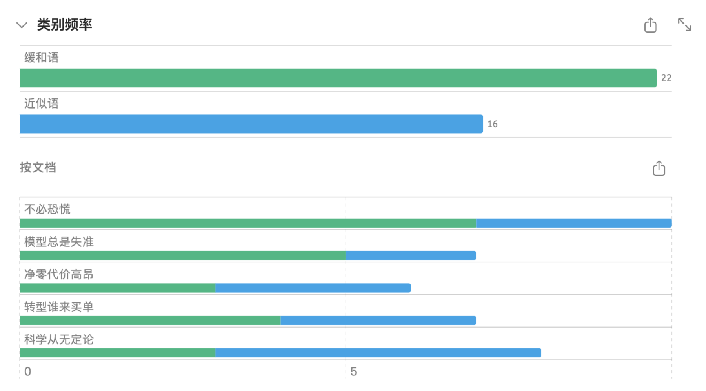
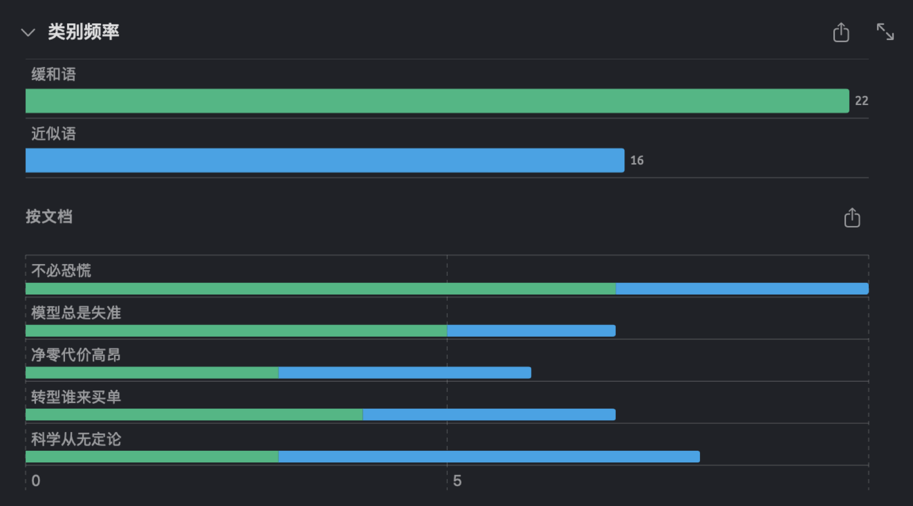
点按类别频率这一行右端的在窗口中打开，可以放大查看图表，并把它们放在你正在阅读的文档旁边。类别频率窗口显示的两张图表沿用来源处的同一个词典以及同一个项目或文档集，并随计数一起更新。请注意，类别频率窗口一次只显示一个词典，所以从另一个词典点按在窗口中打开时，会替换窗口中原来的内容。
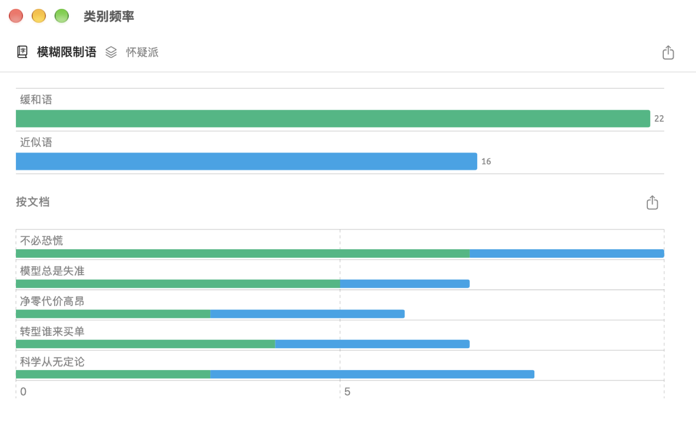
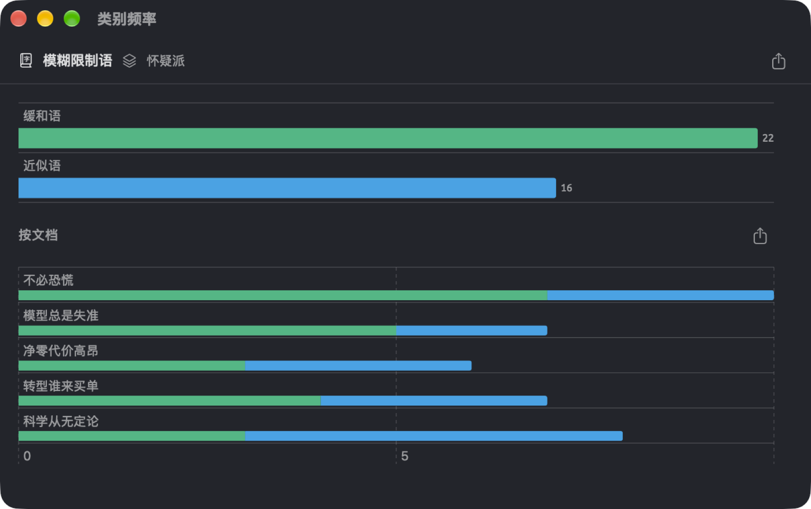
类别的计数等于这个类别中每个词条出现次数的总和，匹配规则见本章前文的词条如何匹配。统计哪些文档取决于你所在的视图：
- 在项目的视图中，统计项目的所有文档。
- 在文档集的视图中，统计这个文档集中的文档。如果是智能文档集（例如“广泛传播”），统计的是当前满足其条件的所有文档。如果是标签，统计的是带有这个标签的文档。
计数依据的是文档的文本内容。因此，正在建立索引的文档以及用其他语言（例如法语）写成的文档也会计入。
导出计数
每张图表都有一个导出按钮，形状是一个带箭头的方框。第一张图表的按钮在类别频率这一行中，或者在类别频率窗口的顶部；按文档的按钮紧挨着图表的标题。你可以导出 PNG 和 PDF 格式，两者都保存图表的图像；也可以导出包含底层数字的 CSV 文件。
每张图表各自保存一个 CSV 文件；对于“模糊限制语”，建议的文件名是 模糊限制语-categories.csv 和 模糊限制语-documents.csv。在第一张图表的表格中，每一行是一个类别；在按文档的表格中，每一行是一个至少有一个匹配项的文档。第一个表格有类别列和数量列。第二个表格先是文档列，后面每个类别各占一列。
对于“怀疑派”，按文档表格包含以下计数：
| 文档 | 近似语 | 缓和语 |
|---|---|---|
| 不必恐慌 | 3 | 7 |
| 净零代价高昂 | 3 | 3 |
| 科学从无定论 | 5 | 3 |
| 模型总是失准 | 2 | 5 |
| 转型谁来买单 | 3 | 4 |
这几列相加，就得到第一张图表中的数字，“近似语”为 16，“缓和语”为 22。
示例
比较文档集时，文档集的词数越多，预期的命中就越多，即使其中的作者并不比别人更常使用模糊限制语。要排除文档集大小不同的影响，请把计数换算成比率。
比率衡量两个量之间的比值。这里，它衡量的是命中数相对于文档集词数的比值，给出每万词文本中的命中数。词典视图只显示计数，所以你需要手动计算比率，或者借助查询计算。比率的计算公式如下：
表示比率， 表示某个类别的命中数， 是所统计文档的总词数。 除以 ，得到每个词的命中数，这是一个很小的数。再乘以 10,000，就得到每万词的命中数，更便于理解和比较。
下面是一个假设的例子，列出词典视图为文档集“行动派”和“怀疑派”显示的命中数。词数取自示例项目，四舍五入到千位；怀疑派的命中数就是上文的总数，行动派的命中数则是为了说明而虚构的。在示例项目中，文档集“行动派”的六篇文本总共只有三处命中。
| 行动派 | 怀疑派 | |
|---|---|---|
| 词数 | 4,000 | 3,000 |
| 近似语 | 12 | 16 |
| 缓和语 | 24 | 22 |
行动派的“缓和语”总数更多，24 对 22。不过，行动派的文本共有 4,000 词，怀疑派只有 3,000 词。对于行动派，，，因此：
怀疑派同理（，）：
每万词中，怀疑派使用缓和语约 73.3 次，行动派使用 60 次。“近似语”的每万词比率，行动派为 ，怀疑派为 ，所以在这一类上怀疑派遥遥领先。
每个文档的总词数显示在检查器文本标签页的词数中（见第 10 章“文本检查器”中的词数和不同词数）。把每个文档集中各文档的总词数加起来即可。阅读器状态栏中的词数包括标点，所以会更大一些。
你也可以构建一个查询来完成整个计算：
- 在导航栏中点按项目下的查询，这样两个文档集都会计入。
- 在查找条件中选取文本 · 文本匹配。
- 在文本行的第二个菜单中选取词典。“模糊限制语”是项目中唯一的词典，会被自动选中。
- 点按词典下方的控件，只勾选“缓和语”。如果什么都不勾选，两个类别会合在一起计数。
- 在显示中选取数量。
- 点按分组依据，在新一行的字段菜单中选取文档集。
- 在显示命中的菜单中选取每万词。
名为“行动派”和“怀疑派”的两行给出“缓和语”这个类别的出现比率。在示例项目中，“行动派”约为 5，“怀疑派”约为 66。“怀疑派”的比率低于上文的 73.3，因为查询除以的是检查器中词数统计给出的各文档确切词数。
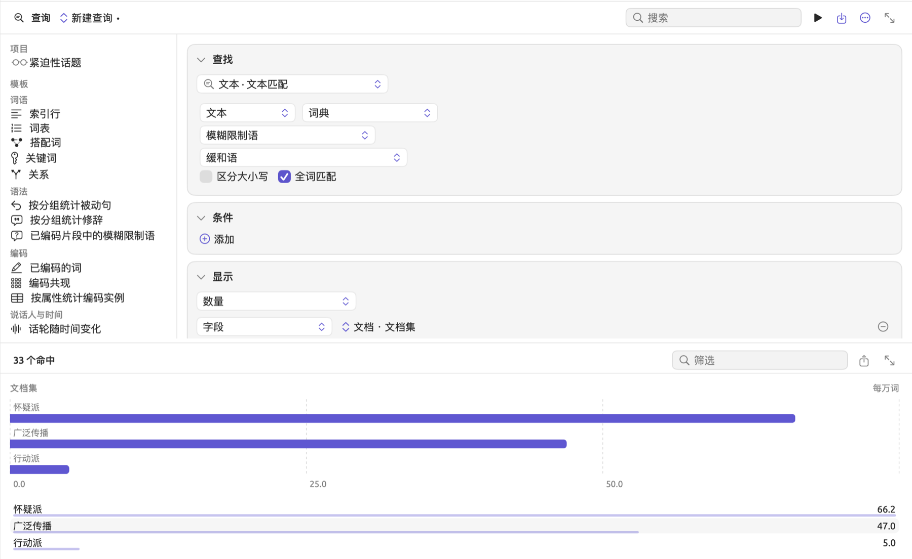
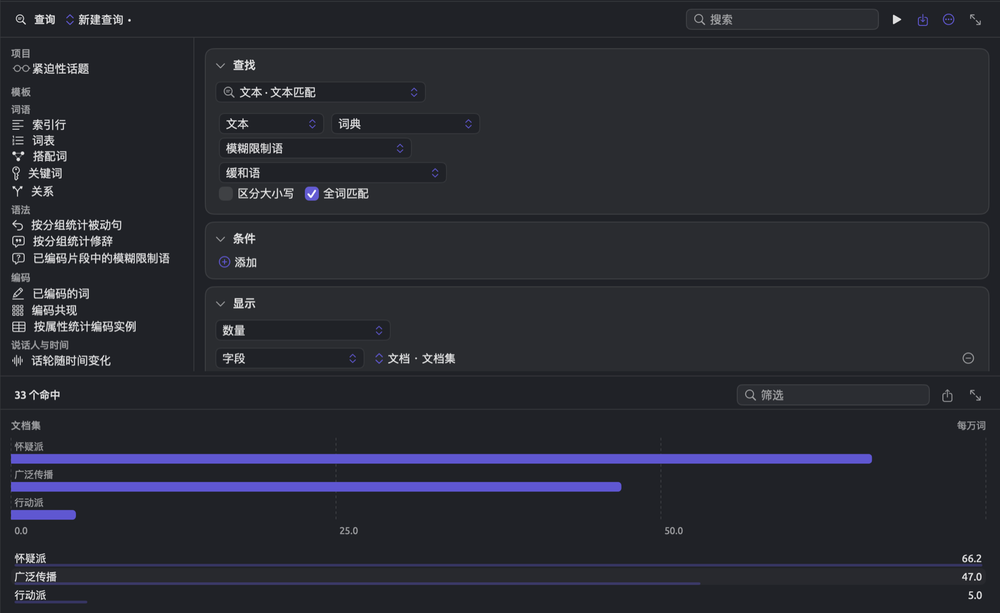
计数中还包括作者引用而非自己使用的词语，例如“科学从无定论”中的说不准。按文档图表能帮你判断匹配项是分散在许多文档中，还是集中在某一个文档里。请注意，按文档图表中的条形表示的是计数，所以要结合每个文档的长度来看。要比较多组文档，请在查询中使用比较（见第 16 章“查询结果与统计”中的比较各组）。
从类别开始的词汇速写
词汇速写概括一个词在语法上的搭配情况，例如它最常见的主语、宾语和修饰语（见第 12 章“词汇速写”）。从类别开始的词汇速写，可以让你逐一查看类别中的各个词条。从“缓和语”开始时，词汇速写会显示作者在哪些事情上有所保留。
要速写一个类别的词条，请在项目或文档集的词典视图中右键点按这个类别，然后选取词汇速写。类别中没有词条时，这一项不可用。
要速写某个特定词条，请在词条列表中连按这个词条，或者选择它后按下 Return 键。在词条列表中右键点按词条并选取速写此词，效果相同。如果在这个菜单中选取在窗口中打开，速写会在词汇速写窗口中打开，词典视图仍留在屏幕上。
从文档集开始时，文档集的标签页会显示它的词汇速写视图。从项目的词典标签页开始时，会打开项目的词汇速写标签页。视图顶部的横栏下方有一行，先显示类别的名称和颜色，后面是它的候选词，即词汇速写可以作为起点的词。候选词是类别中每个词条所对应的词元；在“缓和语”中，我觉得的候选词是觉得，我猜的候选词是猜。选取词汇速写后，速写显示第一个候选词，也就是出现最频繁的那个。点按另一个候选词即可速写它。
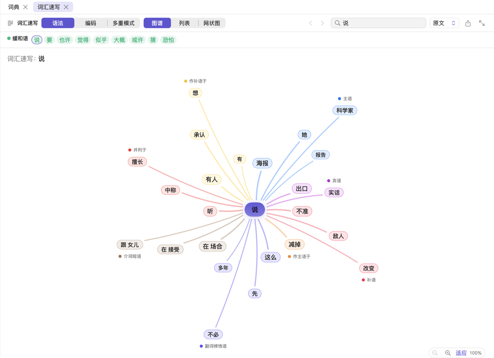
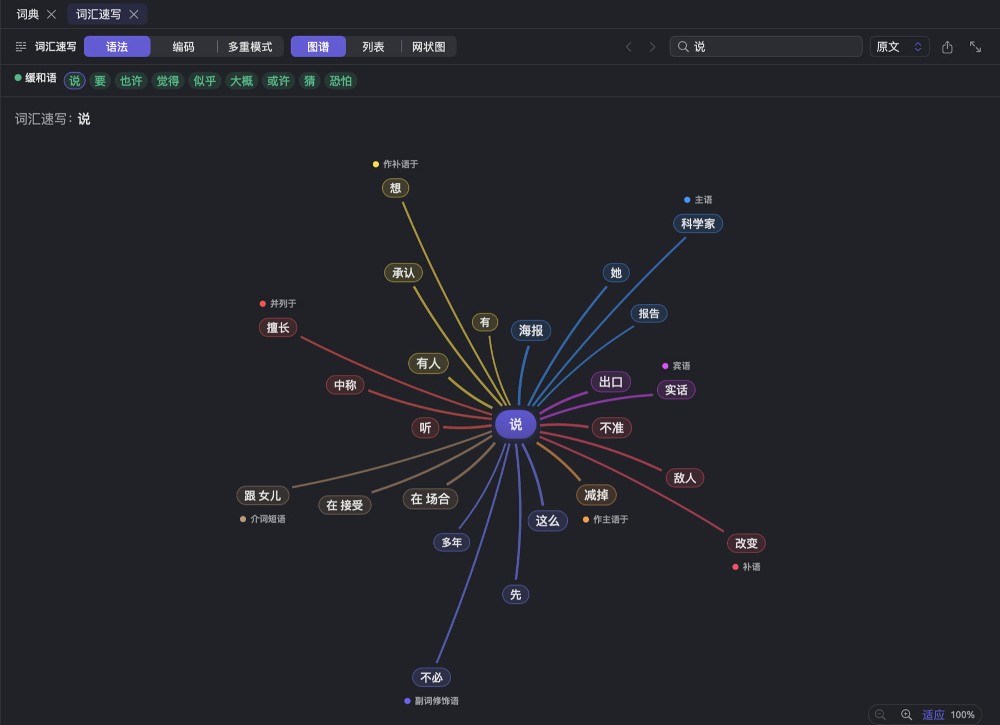
词汇速写需要为词条找到一个词元。LemmaLoom 首先要在你分析的文档中找到词条出现的位置，并从中得出它的词元。
- 单个词的词条会对应到它的词元，例如英文的 seems 变为 seem。
- 短语词条（我觉得）的速写则以其语法中心词的词元为基础，这里是觉得，我是它的主语。出于同样的原因，我猜对应到猜。关于词的语法结构，第 21 章“分析与索引”中的关键术语有更详细的说明。
- 如果词条中含有缩约形式，索引会把它拆成几个词，所以英文的 I'd say 归在 say 下，而 I'm not sure 归在 be 下，因为语法分析把 'm 标为中心词。
- 索引拆成几个词的中文词条，会被视为由这些词组成的短语。
如果词条无法按原样在文档中找到，就会通过其中各个词的词元来得出它的词元。也就是说，以词典形式写出的词条（例如英文的 seem），即使文档中只出现了 seems，也能找到它的词元。
对应到同一个词元的词条共用同一个候选词。将鼠标指针悬停在候选词上，可以看到与它关联的词条列表。候选词按其词元在项目或文档集中出现的频率从高到低排列；在你的语料中以任何形式都没有出现的词条排在最后，按原来的写法显示，不可用，提示为未找到。如果你修改词输入框中的内容并按下 Return 键，就会速写这个词，这一行也会消失，除非这个词本身正好是一个候选词。
查询中的词典
如果透镜和计数不够用，例如要找出一个词的所有屈折形式、按文档集计算比率，或者只在编码片段中查找，请使用查询。如何构建查询，第 15 章“构建查询”有说明。查询中的每个文本行都有两个菜单。第一个菜单决定词条与什么进行匹配。第二个菜单初始为词条，决定词条从哪里来。
查找词典匹配项
- 打开一个查询。针对单个文档，请选取显示 ▸ 检查器 ▸ 多重模式，然后点按查询。针对文档集或项目，请打开它的查询视图。
- 在查找条件中选取文本 · 文本匹配。条件中会出现一个文本行。
- 打开这一行中显示词条的菜单，选取词典。这时会选中项目中按字母顺序排在最前的词典；你可以在下方出现的菜单中另选一个。
- 如果只想使用部分类别，请点按词典下方显示为无的控件，在打开的面板中勾选这些类别。如果什么都不勾选，会使用所有类别。
- 让第一个菜单保持为文本，就能得到与透镜相同的匹配项。
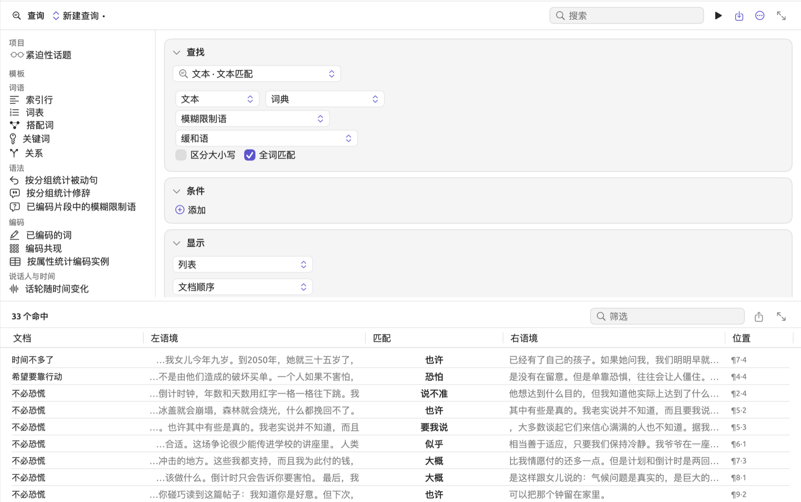
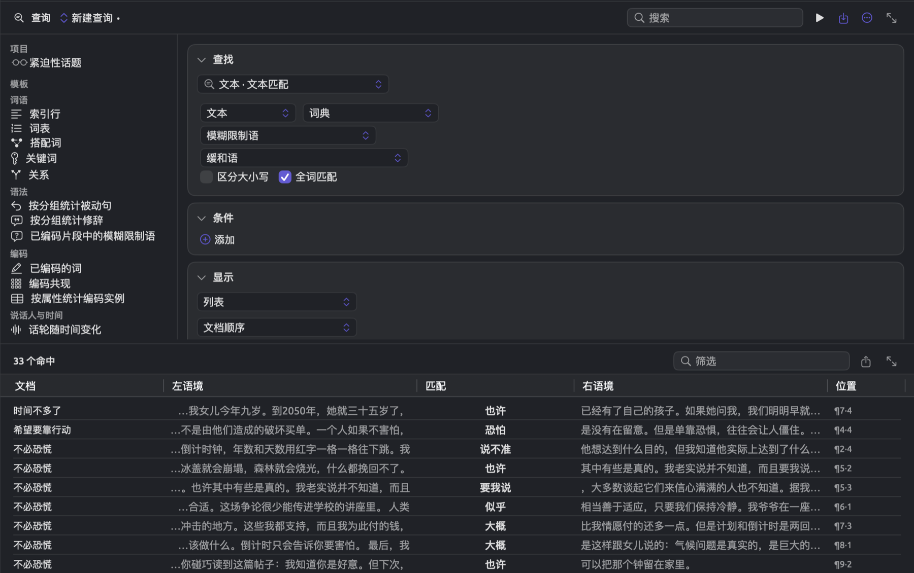
结果会在上下文中显示匹配项，显示则提供通常的计数和图表（见第 16 章“查询结果与统计”）。
这一行下方的两个复选框（区分大小写和全词匹配）会影响查询的匹配方式。不勾选全词匹配时，词条也会匹配较长词语内部的部分（about 能匹配 roundabout）。勾选区分大小写后，大小写就会起作用，perhaps 只能匹配 perhaps。最后，第一个菜单选择文本时，无论是否勾选这两个复选框，匹配都会忽略重音符号和字符宽度的差异。
第一个菜单的默认选项是文本，它按照本章前文词条如何匹配中的规则，把查询词条与文档文本中写下的内容进行比较。另外三个选项（词、词形和词元）则把词条与索引找出的单个词进行比较：
- 词把查询词条中的每个词与文档文本中的每个词进行比较。除非勾选了区分大小写，否则不考虑大小写和重音符号。
- 词元把查询词条中的每个词与文档文本中各个词的词元进行比较。查询词条要写成词元形式。seem 能匹配 seem、seems 和 seemed。要查找按文本中实际出现的形式写成的词条，例如英文的 it seems，请使用词而不是词元。词元会忽略区分大小写。
- 词形与词元的工作方式相同，只是会区分重音符号，所以能把德语的 schon 和 schön 区分开（见第 15 章“构建查询”中的比较的对象）。
使用这三种方式（基于词的比较）时，只要短语中的词在一个句子中依次相连，短语就算匹配，词与词之间的换行或空白不影响匹配。词条中的连字符被视为空格，索引拆成单独一个词的连字符也是如此（在英文文档中，carbon neutral 能匹配 carbon-neutral）。
对于这三种比较方式（基于词的比较），全词匹配完全不起作用。在中文文档中，查询词条可能只会匹配索引把可能识别为一个完整独立的词的位置。如果文档尚未建立索引，这三种比较方式都会像文本一样工作。
词典规则
词典还可以检验其他查询结果，例如查找含有缓和语的句子，或者含有近似语的编码片段。
- 在查找条件中选取要查找的内容，例如文本 · 句子。
- 在条件中点按添加，然后选取添加文本。
- 在新一行的第二个菜单中选取词典，然后像上文那样选择词典和类别。
只要结果中至少有一个匹配的词条，这一行就成立。对于需要索引的结果（例如词和句子），第一个菜单初始为词；对于其他结果（编码实例、段落等），它初始为文本。查找词时，每个结果都是单个的词，所以只有单个词的词条才能匹配。
如果要查找编码为“不确定性”且含有缓和语的段落，请在查找条件中选取标注 · 编码实例。设置规则编码 是以下任一 “不确定性”，再为“模糊限制语”的“缓和语”类别设置一个文本行。
列出词条及其命中次数
查找条件中的资料库 · 词典词条显示词条本身。每一行对应一个词条，各列包括词条名称（名称）、所属类别（类别）、词典（词典）和命中数（命中）。命中数按照前文词条如何匹配中的规则，根据词条在查询范围内的文档中出现的次数计算。在单个文档自己的查询中，查询范围就是当前打开的文档。
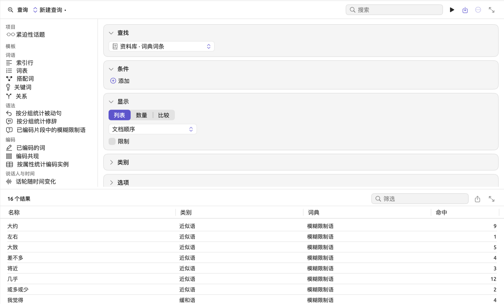
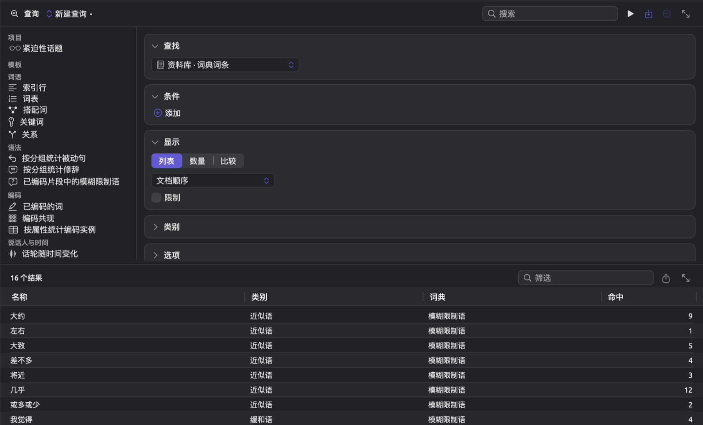
在词典视图的词条列表中，命中数按类别分开显示。查询则一次显示项目的全部词典；你可以在条件中添加规则来缩小范围。针对词典的规则会把列表限制为一个词典的词条，而规则命中 是 0 会返回从未出现的词条。
模板“按文档统计词典类别”
这个模板以查询的形式给出按文档图表中的数字。
- 打开文档集或项目的查询视图。
- 在左栏的模板下，点按按文档统计词典类别。它列在说话人与时间下。
这个模板在项目中按字母顺序排在最前的词典中查找文本匹配。它使用所有类别，第一个菜单设为文本。结果显示数量，先按文档分组，再按类别分组。你可以在查找条件中另选一个词典。只要项目中有词典，这个模板就会出现在涵盖多个文档的查询中。
把词典查询存储为透镜或分析器
如果一个查询使用了词典，并在此基础上添加了关于说话人或特定编码使用情况的规则，你可能会想把它存储为透镜（见第 18 章“使用查询结果”）。
查询透镜用一种颜色标注每个匹配项，图例中显示的是查询名称。要按词典类别区分匹配项，请在类别条件中为每个词典类别各添加一个查询类别（见第 15 章“构建查询”中的类别与着色依据）。在每个查询类别中选取添加文本，把新一行的第二个菜单设为词典，然后只选择对应的那个词典类别。启用查询透镜时，它会获取词典中词条当时的状态。如果之后修改了词典，请停用这个透镜，再重新启用。
由查询生成的分析器会在所有项目的每个文档建立索引时运行，并把结果与相应的文档保存在一起（见第 18 章“使用查询结果”中的把查询转换为分析器）。请注意，只有把词条与索引找出的词进行比较的查询，才能使用存储为分析器…。为此，文本行的第一个菜单必须是词、词形或词元。此外，查询必须查找词、句子或类似的需要索引的单位。
分析器会保存创建时使用的词条，直到你更新它。生成分析器的查询发生变化后，分析器会被标为已过期。要更新查询的分析器，请在查询的存储菜单中再次选取存储为分析器…。这时对话框的标题为更新分析器，点按更新即可刷新分析器中保存的词条。
归档中的词典
只有整个项目的 LemmaLoom 归档（.llz）才包含项目的词典。导入这样的 .llz 文件，会恢复项目归档中的词典。关于归档和交换格式的更多信息，见第 22 章“交换与导出”。